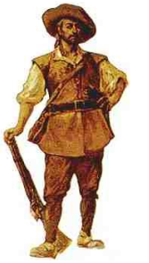

Informações Demográficas
População: aproximadamente 264.000 habitantes
Área: 10,50 km²
IDH: 0,850 - elevado (50°)
Densidade demográfica: 89,5 hab/ha
Principais vias de acesso: Av. Nossa Senhora do Ó, Av. Itaberaba, Av. João Paulo I.
Dia de fundação: 29 de Agosto - 442 anos desde a fundação
Região de São Paulo: Noroeste
História
Ao ouvir o nome "Freguesia do Ó" percebemos que ele não é nem um pouco parecido com os outros bairros como "Pirituba", "Paulista" "Centro" entre muitos outros. Isso porquê ele é um dos únicos bairros que manteve o nome dado pelos portugueses na época colonial.
O nome em sí foi dado pela rainha de Portugal, dona Maria I, ainda no século XVIII(século 18). Naquela época, São Paulo tinha apenas uma Freguesia, a da Sé. Então, a rainha, no dia 15 de setembro de 1796, dividiu a então Freguesia da Sé em três:
- Freguesia da Sé
- Freguesias da Penha
- Freguesia da Nossa Senhora do Ó.
O nome "Nossa Senhora" vem da devoção à Nossa Senhora da Expectação, é a forma como é chamada Maria durante a espera do nascimento do menino Jesus. O "Ó" vem da novena cantada, há séculos, sempre nos dias 17 e 24 de dezembro, e quer dizer:

Com o passar dos anos, bairros como a Sé, Penha de França e Santo Amaro deixaram de utilizar a antífona “Ó” em seus nomes, e esta honraria, hoje, pertence somente à "Freguesia do Ó".
Sobre o Bairro
A história conta que a Freguesia remonta ao ano de 1618, quando foi construído o Caminho de Nossa Senhora de Expectação (ou Esperança).
A região pertencia à sesmaria de Manuel Preto, que ali edificou a igrejinha em devoção a Nossa Senhora da Esperança. A capela construída pelo bandeirante foi destruída pela ação do tempo. Outra foi construída no mesmo lugar.
Manuel Preto era um bandeirante muito conhecido na Vila de São Paulo. Amado e odiado, era filho do também bandeirante Antônio Perto, que havia exercido vários cargos na vila, entre eles o de vereador. Era um grande caçador de índios e não respeitava as missões onde os jesuítas catequizavam os chamados “negros da terra”. Em 1623, segundo documentação espanhola, Preto e sua gente investiram contra missões jesuítas nos sertões do rio Uruguai. Nesse ataque igrejas forma saqueadas, altares foram profanados, imagens de santos foram quebradas e índias foram violentadas.
O local tinha importância para os habitantes da vila, pois era uma dos mais procurados pelos mineradores da época, por levar ao outro do pico do Jaraguá. No mesmo ano a Câmara dos Vereadores recebeu informações que os moradores da freguesia (do Ó) andavam rebeldes quanto ao pagamento do tal pedágio. O fato é que a cobrança perdurou até o início do século XIX.
O pequeno bairro manteve-se, por muitos anos, praticamente isolado do restante da cidade, e ficou conhecido por seus sítios, chácaras e por fazer parte do cinturão caipira da cidade. Devido ao bom clima da região, a cana-de açúcar e a aguardente da freguesia ficaram famosos em toda a região, especialmente a caninha. Os sitiantes enchiam os carros de boi com a melhor pinga e vendiam-na no centro da vila. Os próprios historiadores e São Paulo garantem que o paulistano gostava mesmo era da pinga, e não do vinho.
